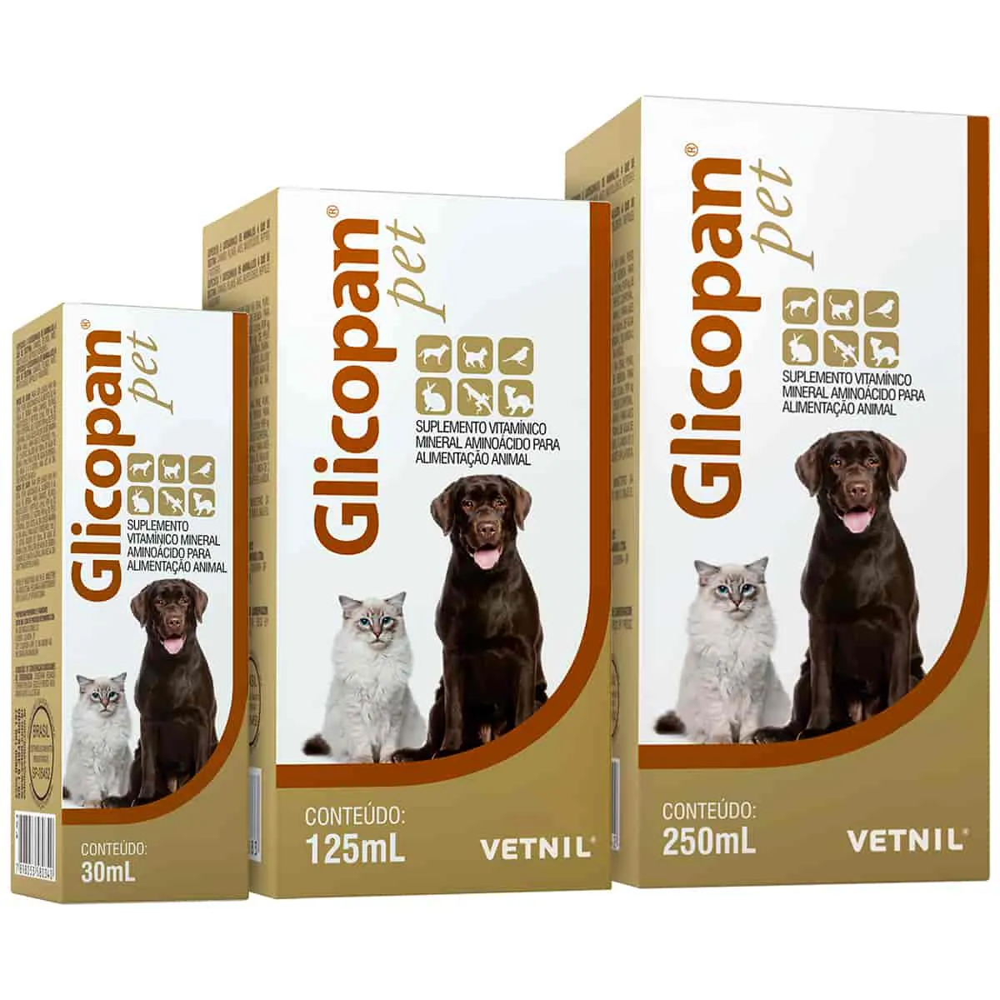

Detalhes dos Nossos Produtos
Conheça melhor nossos produtos, suas características
e como eles podem contribuir para o seu dia a dia no campo.
Ração para Animais

Nossa ração oferece nutrientes importantes para
complementar a alimentação dos animais, contribuindo
para seu desenvolvimento e bem-estar.
Indicação: alimentação de animais,
conforme a espécie e a fase de desenvolvimento.
Características: embalagem de 20 kg,
armazenamento prático e composição adequada à categoria
do produto.
Preço: R$ 89,90
Adubo Orgânico

O adubo orgânico auxilia na melhoria das condições
do solo e fornece nutrientes que contribuem para
o crescimento e desenvolvimento das plantas.
Indicação: hortas, jardins, vasos
e pequenas plantações.
Características: embalagem de 5 kg,
fácil aplicação e utilização em diferentes tipos de cultivo,
conforme as instruções do fabricante.
Preço: R$ 35,90
Kit de Jardinagem

O kit de jardinagem é ideal para quem gosta de cuidar
de plantas e jardins. Possui ferramentas que facilitam
diferentes atividades de manutenção e cultivo.
Indicação: jardinagem, manutenção
de vasos, hortas e pequenos jardins.
Características: acompanha pá pequena,
ancinho, tesoura de poda e luvas de jardinagem.
Preço: R$ 79,90
Carrinho de Mão

O carrinho de mão é um equipamento utilizado para
facilitar o transporte de materiais em atividades
rurais, agrícolas e de jardinagem.
Indicação: transporte de terra,
areia, adubo, ferramentas e outros materiais.
Características: estrutura metálica,
caçamba resistente e roda para facilitar o deslocamento.
Preço: R$ 189,90
Produtos Veterinários para Saúde Animal

Nossa categoria de produtos veterinários oferece
opções destinadas aos cuidados e à saúde dos animais,
auxiliando na prevenção e no tratamento de diferentes
necessidades.
Indicação: cuidados veterinários
de diferentes espécies de animais.
Características: produtos de higiene,
cuidados e medicamentos veterinários, conforme
disponibilidade e exigências de comercialização.
Preço: a partir de R$ 29,90
Agropecuária Maria - Qualidade e confiança para o campo!